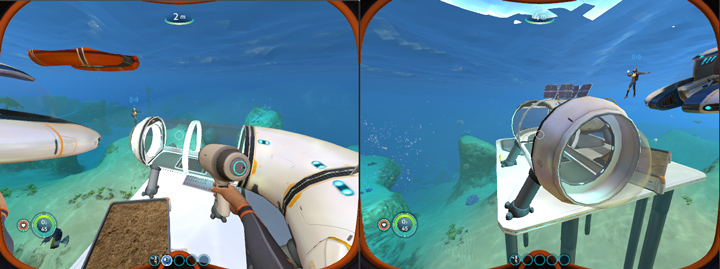

GGDM - Combat Analysis Mod for Guild Wars 2
GGDM was an addon for Guild Wars 2 that I developed and maintained from 2015 to 2018. It started off as a simple tool to display personal DPS in the game, but its feature list grew:
- Real-time group and personal DPS analysis and logging
- GUI modifications overlays for healing and combat
- Automatic network updates and real-time reloading
- Build templates for swapping gear, traits and skills
This post walks through the development of these features and reverse engineering of the game.
Shinkai: A Subnautica Multiplayer Mod

Shinkai (深海) is a multiplayer mod for the game Subnautica. It is open source and available on GitHub.
The mod was tested on the March update of the game (Update 84), but it seems to work with the April build too. I have personally verified that the game was playable from beginning to completion with 3 friends online, but there isn’t any forced limit. As far as a feature list goes, most of the single player experience carries over to multiplayer the way you would expect it to.
Notes on development of the mod and its challenges follow below.
Frame Pacing: Analysis of the Game Loop

The graph above was generated from Visual Studio’s performance profiler on a custom game engine. It illustrates the time taken to render each frame, in milliseconds. From the 7282 frames that were rendered during this collection period, there were only 36 that did not take exactly 16667μs (60FPS target framerate). Of these 36, the largest difference was only 88μs.
Frame pacing is the consistency of frame-times for rendered frames in your engine. If you want your game to feel “smooth” or “fluid”, you should aim to have consistent frame pacing like the graph above. In this article, I’ll be walking you through the low level details that you can implement in your own engine.
Video Playback for Games with VP9
When working on porting an older PC game to a modern version of Windows I needed play its prerecorded videos in-game. Commercial engines (Unity, UE4) include this functionality, and there are also standalone solutions Bink that can work for a custom engine. I wasn’t interested in licensing a commercial product, so I developed my own video player.